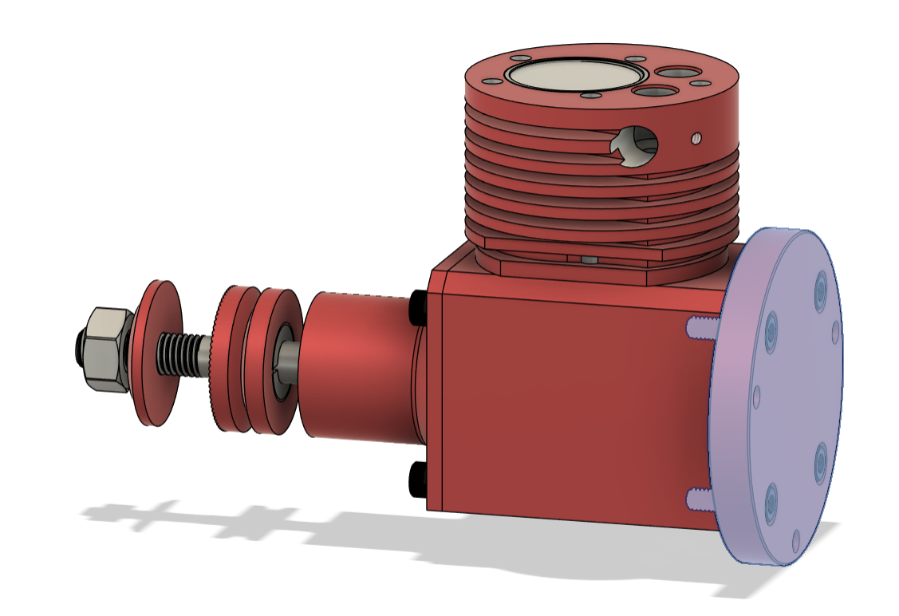
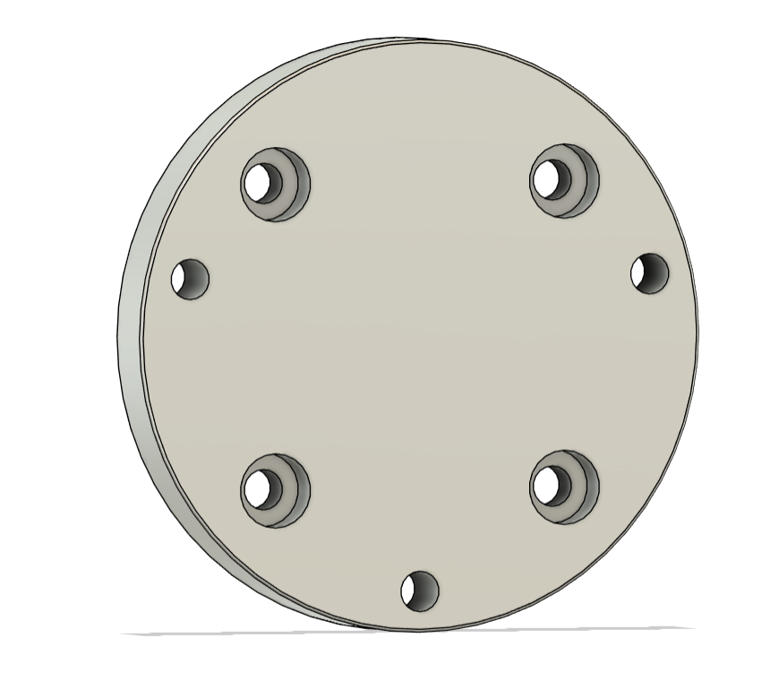
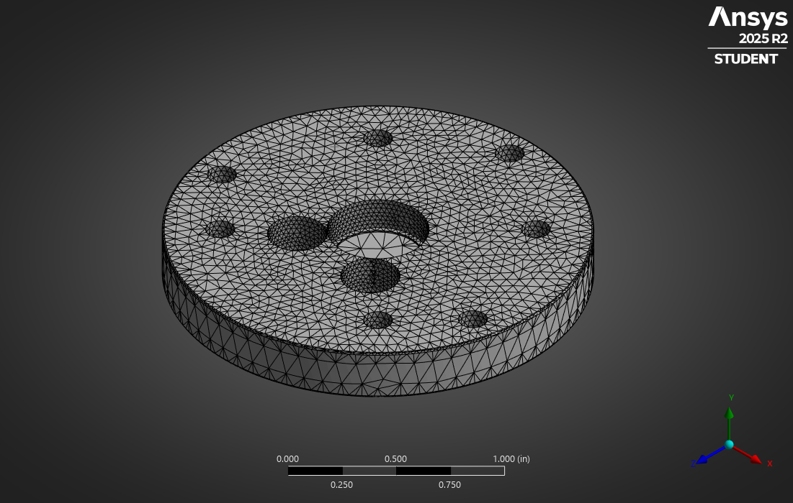
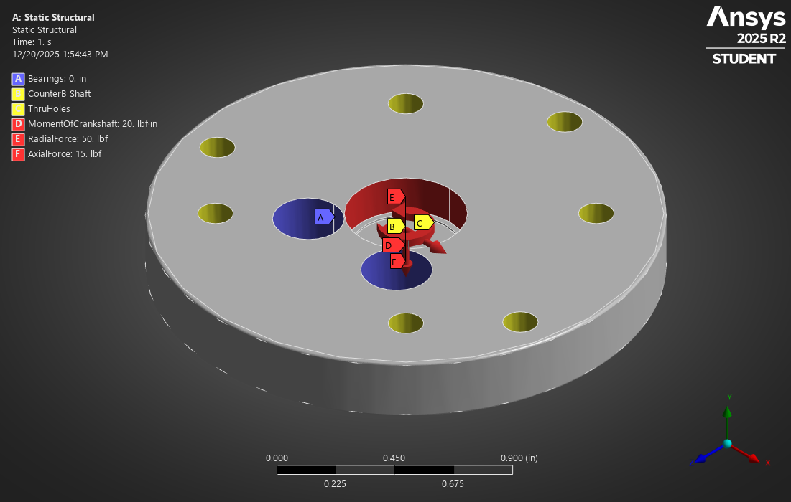
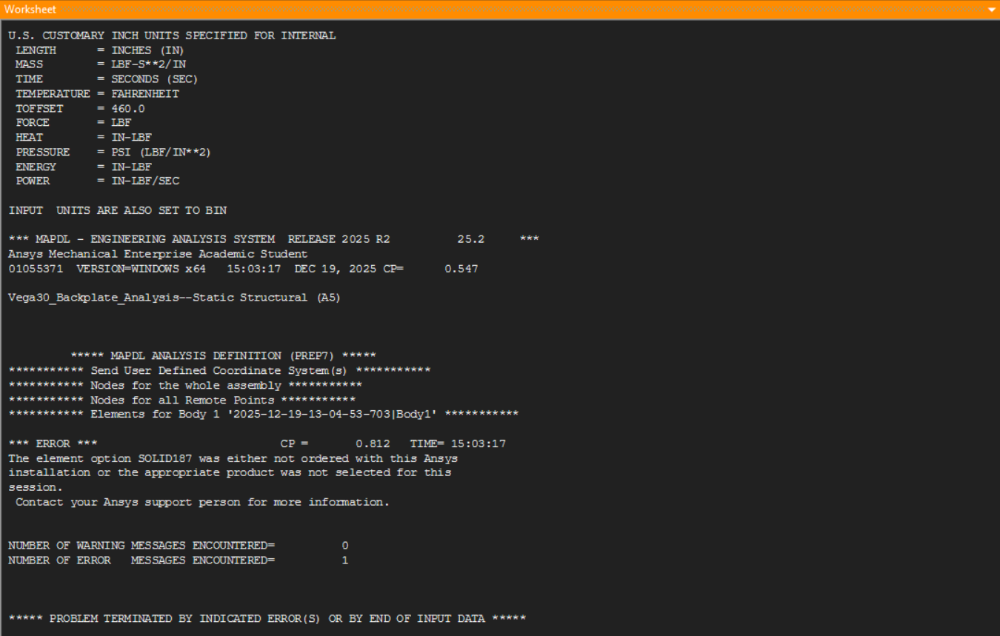
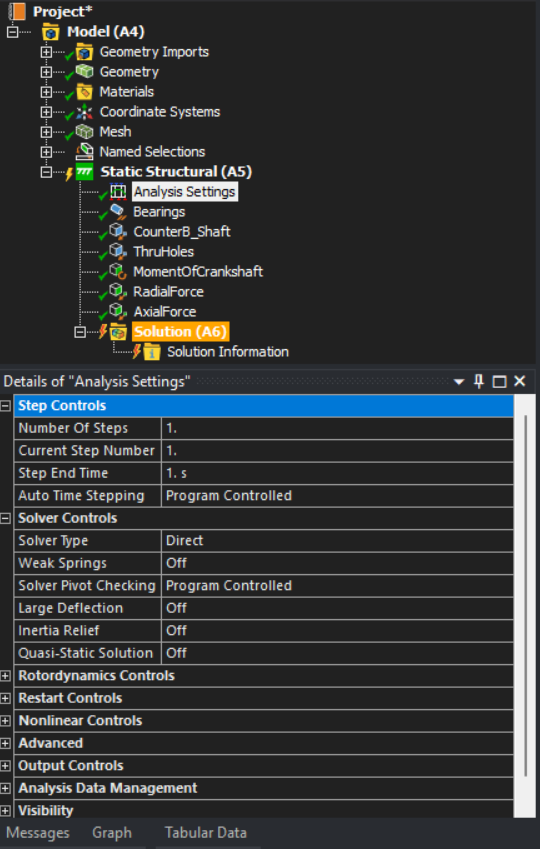

Pre-processing complete — model prepared for solution
This project focuses on the structural analysis of a small internal combustion engine mounting backplate used in RC aircraft and marine applications. The objective is to evaluate stress distribution, deformation behavior, and load transfer paths under representative operational loading conditions.

Engine mounting backplate for component context and installation configuration.The goal of this analysis was to create a representative finite element model of the engine backplate capable of predicting structural response to crankshaft loads. This required careful consideration of how mounting constraints and applied forces translate into the physical behavior of the part.
The backplate geometry was simplified in Fusion 360 prior to import into ANSYS removing non-structural features and suppressing small fillets that would otherwise drive unnecessary mesh complexity without meaningfully affecting results.

Simplified backplate geometry prepared for FE import with non-structural features removed.A mapped hex-dominant mesh was applied to the flat regions, with localized refinement at bolt holes, load application points, and geometry transitions expected to show stress concentration. Mesh sensitivity was evaluated qualitatively to confirm the refinement strategy was appropriate before proceeding to boundary condition setup.

Localized mesh refinement at mounting holes, bearing surfaces, and load interfaces.Fixed constraints were applied at the mounting bolt locations to represent the bolted connection to the engine firewall. Load cases developed include:

Boundary conditions and applied load cases: fixed constraints at bolt locations, bearing and thrust loads at crankshaft interface.All assumptions and simplifications were documented to ensure the model's limitations are clearly understood alongside its predictions.
With pre-processing complete, the model was submitted for solution. The analysis was blocked by an ANSYS license restriction on the current academic installation being the node count from the refined mesh exceeded the solver tier available.

ANSYS solver message indicating license-based node limit reached.
Solver limitation detailing node count exceeds academic license tier.The immediate next step is resolving license access to run the full solution. Once available, post-processing will cover displacement and Von Mises stress results across all load cases, identification of peak stress locations, safety factor assessment, and a structured analysis report documenting findings.
An alternative path is coarsening the mesh globally while preserving localized refinement at critical features, bringing node count within the available license tier without significantly compromising result accuracy at the regions of interest.